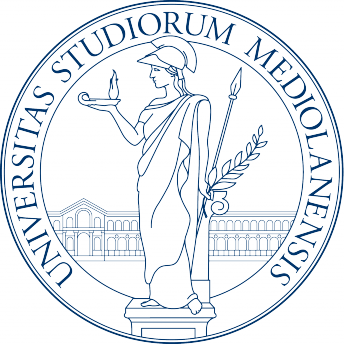

Partner Institutions & Universities
We partner with leading universities advancing neuroscience, data ethics, and responsible AI.

University of Milan
University of Padova
Meet our Team
Researchers, engineers, and community builders join forces to shape transparent and human-centered technologies.